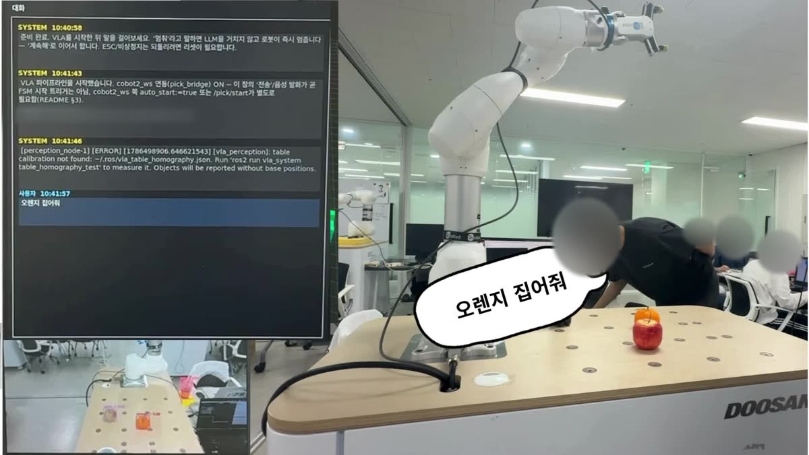
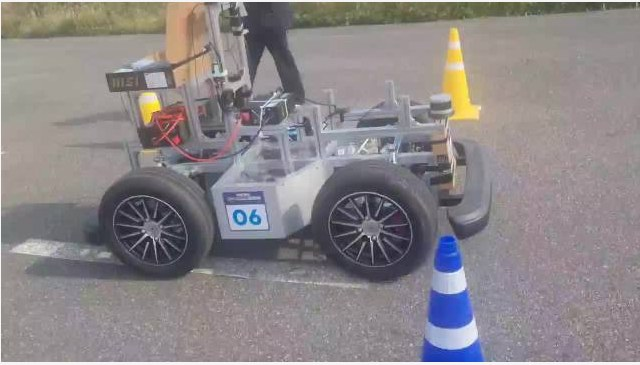
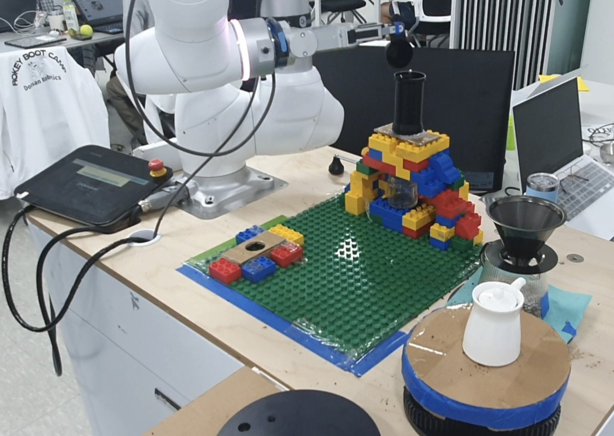
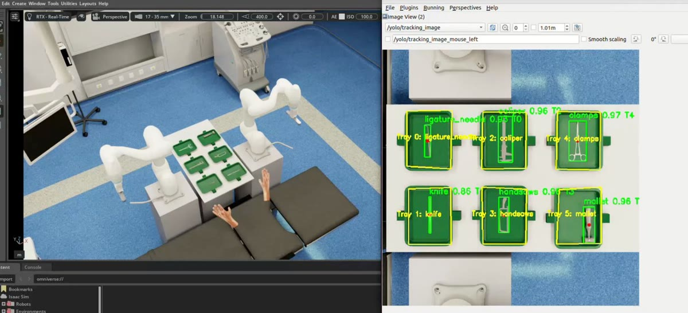
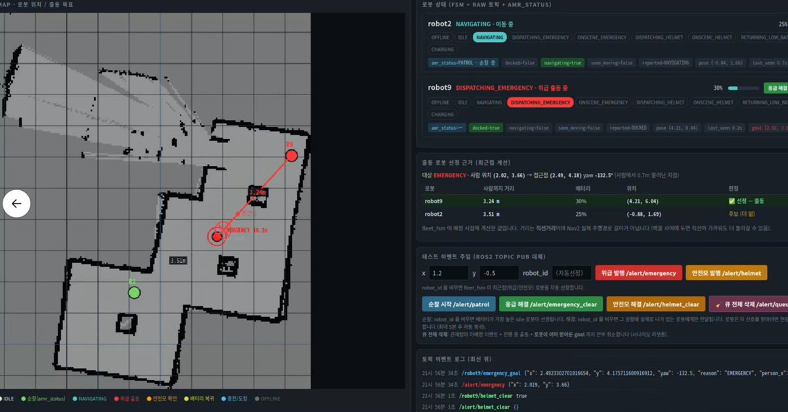

협동로봇 마트 계산대 Pick & Place(VLA 기반 자연어 장애물 우회)
- 주제
- 부트캠프 과제 · AI(Computer Vision)기반 협동 로봇 작업 어시스턴트 구현 프로젝트
- 한 일
- 작업 제어 FSM · 장애물 재계획 연결 · 실물 그리퍼 보정 · 시스템 통합
- 결과
- 출발 전 장애물 우회·손 넣으면 정지 후 재계획, 교시 없는 최적 파지 자세 Pick & Place 시스템 구현
과정 자세히 보기 → | ▶ 1분 시연 영상 | 코드
Robotics Engineer · 기계공학 · ROS2 · 협동로봇 · 자율주행

대표 프로젝트협동로봇 마트 계산대 Pick & PlaceVLA 기반 자연어 장애물 우회 핵심역량
대표 프로젝트자율주행 ERP42 기술 키워드ROS2MoveIt2Nav2GraspGenXYOLOEKFRealSense D435iModbus TCPSolidWorks CSWP로보틱스 질문 기록 공고·현장에서 마주친 용어 문답 기록전공 학습 기계공학부 전공 학습AI 활용 자동화 agent-sidekick-tools (개인 편의를 위해 만든 코드)AI 활용 방식 AI 에이전트 활용 페이지이메일 gwanhuig01@gmail.comGitHub github.com/gwanhuiGIM (프로젝트별 코드 저장소)전시회 관람 관심 분야 전시회 관람 기록증명서 자격·수상·수료 증명서 모음 (Google Drive)
Last modified
사용 언어·도구: Python · Git · C++(공부 중)
과정 자세히 보기 → | ▶ 1분 시연 영상 | 코드




최근 순 ↓